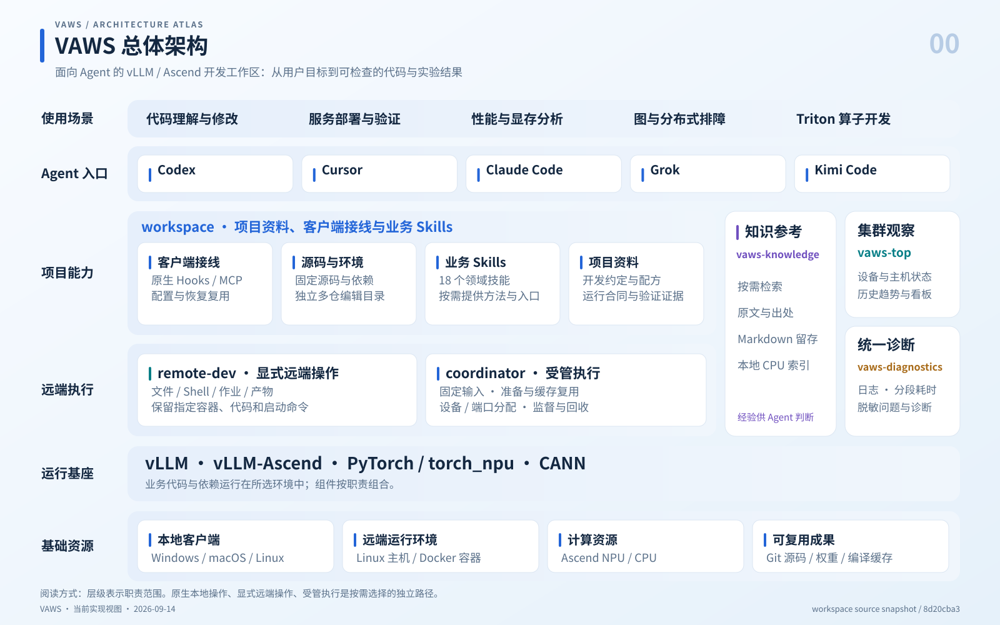
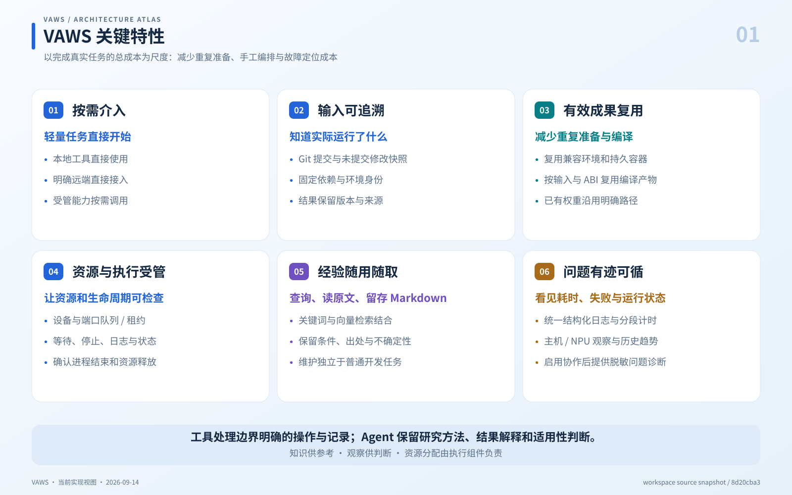
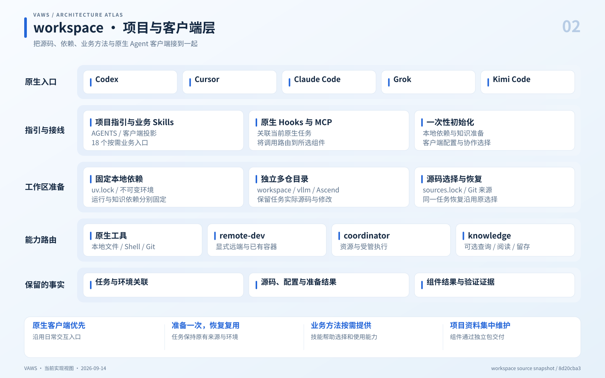
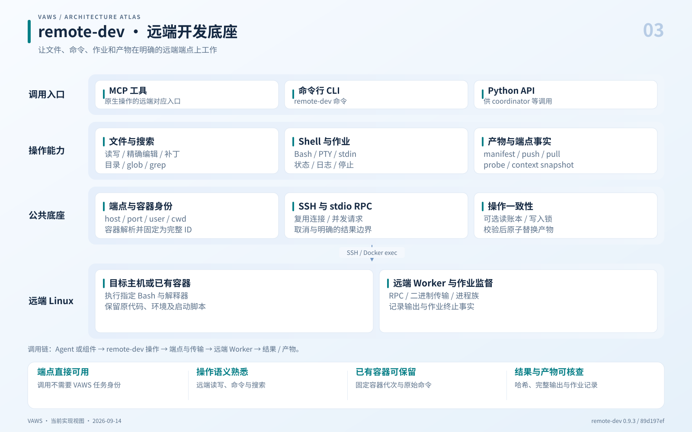
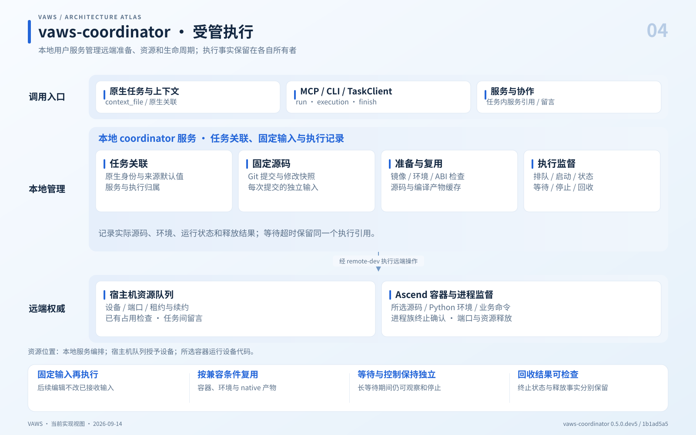
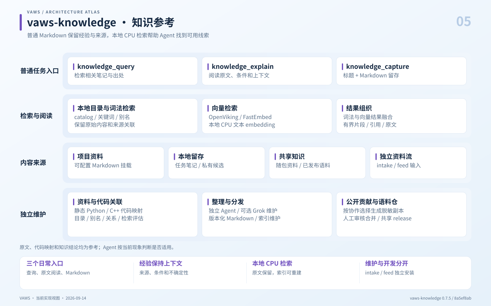
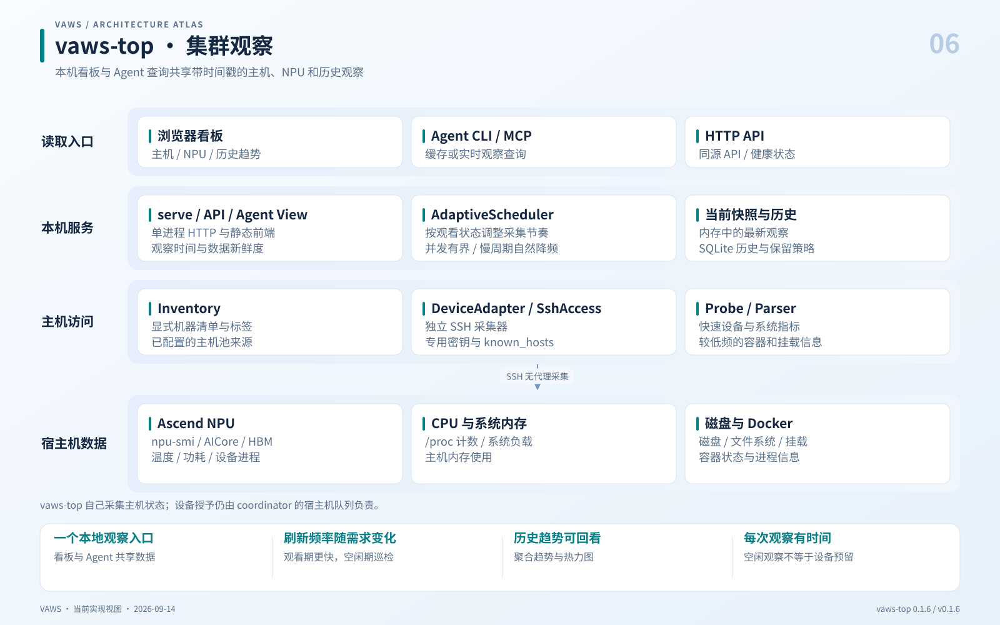
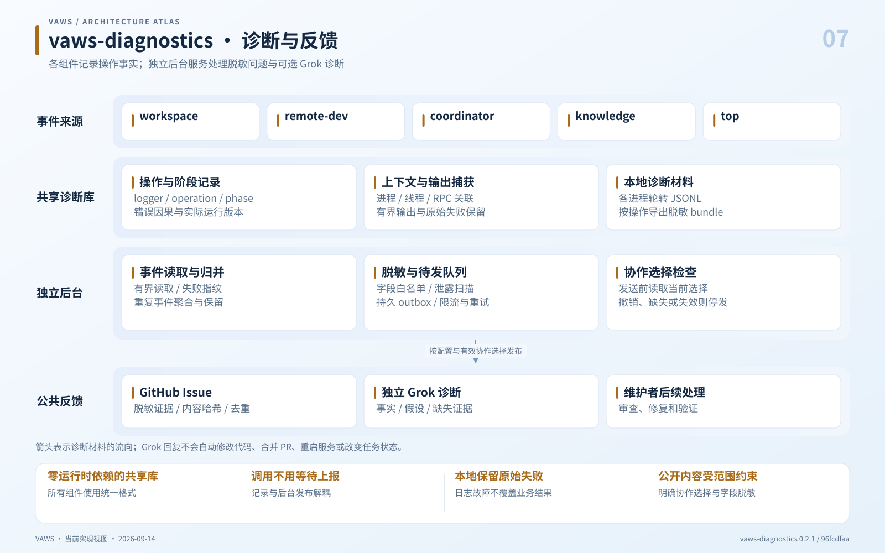

看懂 VAWS 怎样工作
先看平台分层和关键特性，再查看各组件的入口、内部结构、协作路径与职责边界。各图可以独立用于 README、技术介绍或分享材料。
{kind=link}
{kind=link}
把环境、资源和执行细节交给明确的组件，让 Agent 围绕真实开发目标工作。

关键特性
- 用户表达目标，Agent 选择工具、解释结果。
- 项目层提供资料、业务方法与客户端接线。
- 显式远端和受管执行使用不同入口。
- 知识、监控和诊断提供参考与证据。
主要路径
本地文件与 Git → 原生工具；指定 host/container/cwd/命令 → remote-dev；需要环境准备、设备与执行监督 → coordinator。
职责边界
图中的能力不表示所有客户端、设备和业务输入组合已经完成正式验收；分层位置也不表示每个任务必须逐层经过。
实现来源：总体运行合同 · 跨组件诊断合同 · 项目入口与 18 个业务 Skills
{kind=link}
{kind=link}
六项特性对应开发过程中的实际成本，不给普通任务增加额外登记流程。

关键特性
- 按需介入：轻量任务直接开始。
- 输入可追溯：知道实际运行了什么。
- 有效成果复用：减少重复准备与编译。
- 资源与执行受管：让资源和生命周期可检查。
- 经验随用随取：查询、读原文、留存 Markdown。
- 问题有迹可循：看见耗时、失败与运行状态。
主要路径
按需选能力 → 固定必要输入 → 复用有效环境 → 完成业务工作 → 检查结果与资源状态。
职责边界
特性描述的是已实现机制，不构成任意任务都更快、任意业务都正确或所有平台组合均已验收的保证。
{kind=link}
{kind=link}
workspace 是项目材料与消费层，负责把各项能力接到开发任务上。

关键特性
- 一次配置已安装客户端；原生信任与客户端能力仍按实际支持范围处理。
- 普通本地 review、明确 endpoint 的远端操作可直接进行。
- 需要独立编辑或受管准备时固定源码、依赖和实际目录。
- 18 个业务 Skills 覆盖服务、性能、正确性、排障、profiling 和算子工作。
主要路径
用户目标 → 项目指引 / 业务 Skill → 必要的本地准备 → 原生工具或所选组件 → 代码与结果。
职责边界
原生界面目录、Agent 实际编辑目录和任务身份是不同事实；初始化或 Hook 成功不能推断界面已自动切换。
实现来源：原生目录与路由 · 源码与独立多仓合同 · MCP 后端选择实现 · 初始化实现
{kind=link}
{kind=link}
remote-dev 解决明确端点上的远程 I/O、命令执行与通用作业监督。

关键特性
- 同一套公开操作提供 MCP、CLI 和 Python 使用方式。
- 支持远端文件、检索、补丁、Bash、PTY、输入与日志。
- 容器名解析为完整 ID，后续作业绑定同一代容器。
- 复用 SSH stdio RPC，保留并发、取消和传输诊断。
- 产物传输校验哈希后进行原子替换。
主要路径
host / container / cwd + 操作 → 端点固定 → SSH/RPC → 目标主机或 Docker exec → 文件、作业或产物结果。
职责边界
remote-dev 不分配 NPU，也不推断 VAWS 任务身份。停止作业只处理已识别进程族；任意命令自身的副作用仍由该命令决定。
{kind=link}
{kind=link}
coordinator 把一次受管命令的来源、环境、资源和生命周期连成可检查的记录。

关键特性
- 任务由真实原生关联确定，恢复保留已有身份与选择。
- 提交时固定 Git 输入与修改，支持多个来源和显式空来源。
- 准备或复用兼容容器、依赖、构建和源码产物。
- 宿主机队列负责 NPU 与端口授予，监督器管理进程族。
- 支持任务内服务、多个角色/主机约束、状态、等待、日志、停止和证据。
- 任务间留言利用既有主机队列与正常工具调用收取。
主要路径
命令 + 来源 / 环境 / 资源 / 拓扑 → 固定输入 → 准备与资源授予 → 容器执行 → 确认进程终止与资源释放。
职责边界
这是本地用户 coordinator，不能画成托管多租户控制中心。业务 readiness、业务正确性、进程状态与资源释放分别判断；留言不会执行命令或主动唤醒原生客户端。
实现来源：公开执行合同 · 任务 API · 本地服务 · 宿主机资源 API · workspace 消费合同
{kind=link}
{kind=link}
知识组件帮助找到与任务相关的经验，同时保留原文、出处和使用条件。

关键特性
- 普通任务只需三个可选入口，不要求固定笔记模板或额外收尾。
- Markdown/Git 保存内容，CPU embedding 与 OpenViking 提供可重建索引。
- 支持项目挂载、本地候选、包内材料及共享版本。
- 词法与向量检索结合，提供有界片段和原文解释。
- 静态代码映射、整理、检索评估和资料导入属于独立维护。
- knowledge-intake、knowledge-feed 和 vaws-knowledge-corpus 是配套导入、传输和语料组件，非日常 MCP 的必经步骤。
主要路径
问题 → 词法与向量检索 → 带来源片段 → explain 阅读原文 → Agent 判断；capture 写入本地 Markdown，维护在独立路径执行。
职责边界
初始化或显式 setup 负责依赖与知识准备；当前任务 Hook/MCP 消费已安装环境，缺失时不自行安装。关闭社区协作仍保留中央知识读取和本地日志。公开语料审核合并由人负责。
实现来源：知识组件合同 · 检索组织 · 查询入口 · 独立 intake / feed / corpus · 当前初始化准备边界
{kind=link}
{kind=link}
vaws-top 回答主机和 NPU 当前看起来如何，以及过去一段时间发生了什么。

关键特性
- 本机单进程提供静态看板、HTTP API、CLI 与 MCP 查询。
- 自适应调度按观看需求改变频率，采集并发与历史写入有界。
- 独立 SSH 采集器读取 npu-smi、系统计数、磁盘和 Docker。
- 最新数据缓存在内存中，SQLite 保存历史。
- 观察结果包含 observed_at、age_seconds 和 allocation_authority=false。
- 发布 wheel 自带前端构建产物，普通安装无需本机前端构建。
主要路径
显式清单 → 调度器 → 独立 SSH 主机探测 → 内存快照 / SQLite → 看板、HTTP 或 Agent 查询。
职责边界
这是本机单用户、默认 loopback 的观察应用。它不读取或授予 coordinator 租约，观察到空闲不意味着资源已分配；不能画成 coordinator 的必经前置步骤。
实现来源：官方组件架构 · 自适应调度器 · 主机访问组合 · 历史存储 · workspace 启停接线
{kind=link}
{kind=link}
诊断组件让慢操作和失败可定位，并在有效协作选择下把脱敏材料交给维护者。

关键特性
- 共享包没有运行时依赖，组件在统一边界记录日志与耗时。
- 操作、阶段和运行版本可关联；诊断 ID 不赋予任务或资源权限。
- 每进程轮转 JSONL，日志、输出和导出材料均有大小边界。
- 独立 worker 负责归并、脱敏、持久队列、限流和 GitHub 对账。
- 发送前重新读取当前协作选择，正常调用不等待上报或模型。
- Grok 只接收脱敏证据，提供有边界的诊断建议。
主要路径
组件事件 → 本地 JSONL → 独立事件读取 / 脱敏 / 队列 → 当前协作选择检查 → GitHub Issue → 可选 Grok 诊断 → 维护者处理。
职责边界
本地记录不依赖上报授权。公开问题和 Grok 诊断按配置与有效选择运行；不自动修代码、合并、部署或改变资源状态。未知提交结果先对账，不作 exactly-once 保证。